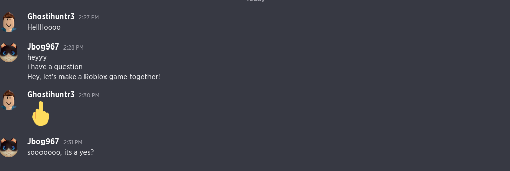

📢 Breaking News: Crapplegamez and Josh Hutcherson Create Roblox Game!
In an unexpected twist, Internet sensation Jbog967 and Hollywood actor Josh Hutcherson have joined forces to create a groundbreaking Roblox game!
The game, titled "Obby but with a bazooka," takes players through pixelated landscapes, dodging obstacles, and learning the lore on the way
Game Highlights:
- Lore: Hop into this game and and find something is off about this world designed by Josh Hutcherson himself.
- Mcdonalds: eh, i dunno its mcdonalds...
- Obby Magic: The game is coded entirely with obby... Jbog967's model magic and Josh Hutcherson's creative input have resulted in a seamless gaming experience.
- Secrets: Rumor has it that hidden within the game are secrets. Will you discover them all????
Play the Game: Obby but with a bazooka 🎮
Behind the Scenes:
- Jbog967, known for their quirky videos and love of all things cats, reached out to Josh Hutcherson via a guilded text that simply said, "Hey, let's make a Roblox game together!" To everyone's surprise, Josh responded with a middle-finger emoji. �

- The duo collaborated virtually, sharing ideas, sketches, and lines of code. Josh even recorded voiceovers for the game's characters.
- Josh's signature humor and Jbog967's infectious enthusiasm shine through in every pixel.